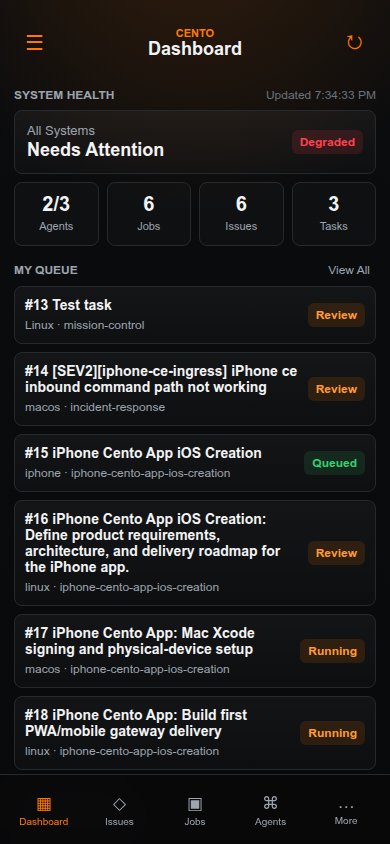
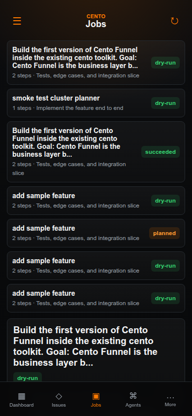
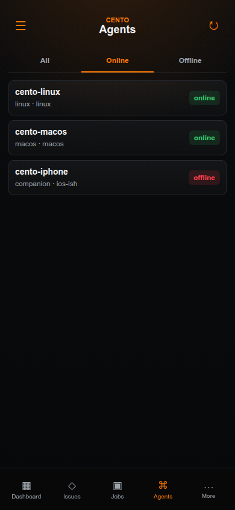
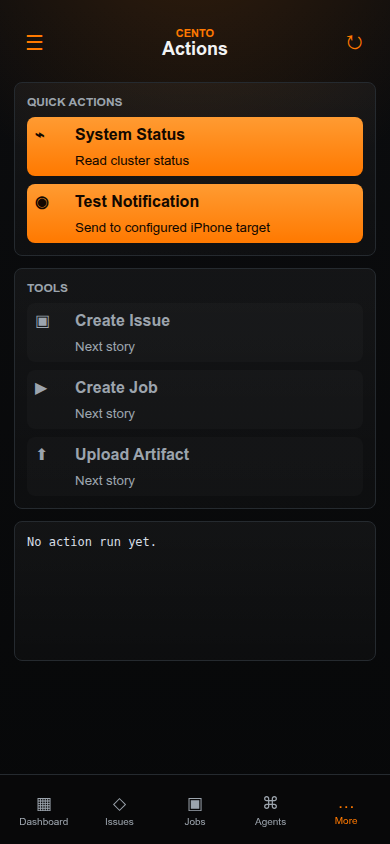
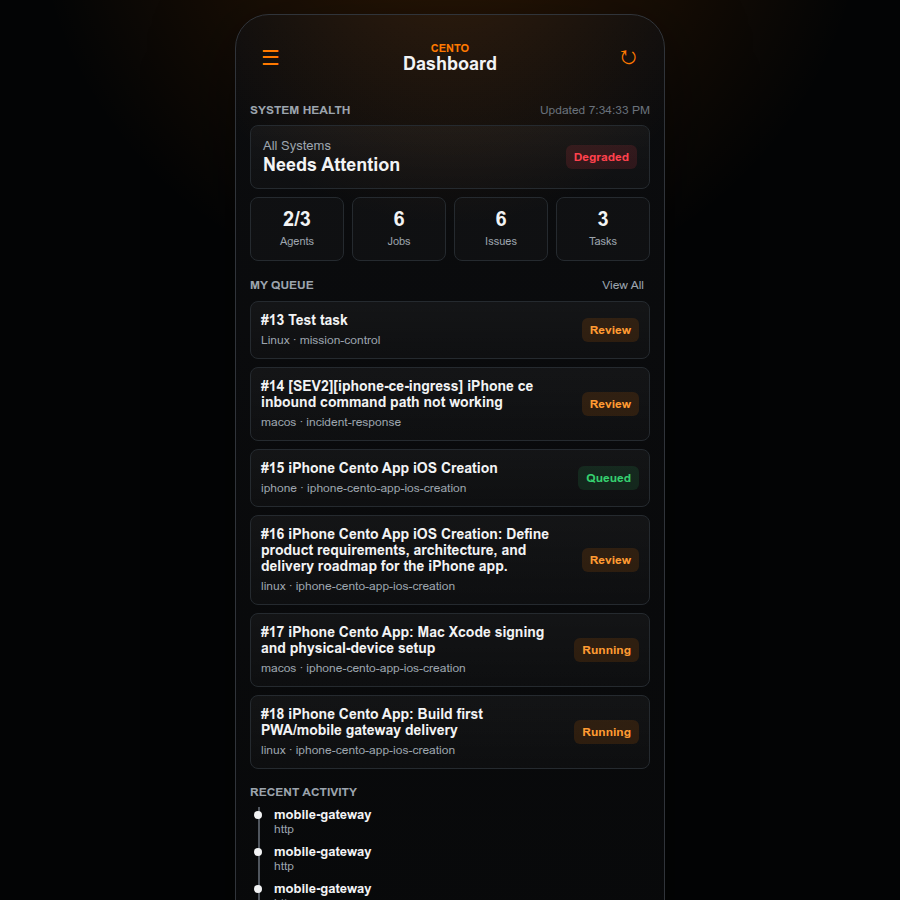

Dashboard
Shows real health metrics, Redmine agent-work queue, status pills, and bottom navigation.
Agent-work #18
First phone-visible PWA/mobile gateway delivery for the dark orange Cento operations cockpit.
The requested target was a native-feeling iPhone control surface for Cento: dashboard, Redmine issue views, job execution, live logs, artifacts, agents, quick actions, activity, and settings. The supplied reference was a dark industrial mobile UI with orange primary actions and compact operational cards.
workspace/runs/agent-work/18/server.py.cluster.status and notify.test.Captured with Playwright Chromium at mobile viewport after API data loaded.

Shows real health metrics, Redmine agent-work queue, status pills, and bottom navigation.

Shows cluster job cards with trimmed titles, task counts, current step, and status.

Shows Linux and macOS online, iPhone companion offline, with tab layout.

Shows live allowlisted actions plus disabled future actions for create issue, create job, and upload artifact.

Confirms the mobile shell stays framed and readable on a larger browser viewport.
python3 workspace/runs/agent-work/18/server.py --host 0.0.0.0 --port 47918
http://10.0.0.56:47918/
workspace/runs/agent-work/18/state/token.txt
Open the iPhone install checklist